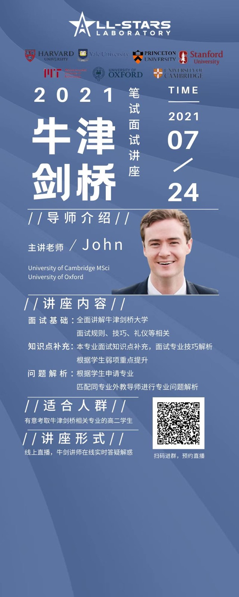

Independent byline
Why Ask Men How to Do Feminism? — On the Pitfalls of the “Feminist Man”
A critical essay on male allyship, discursive centrality, and responsibility in feminist practice.
Visual communication · Editorial research
A selection of visual communication, translation education, and public writing. Original materials have been organized into a browsable web portfolio rather than scattered downloads.
Visual design
Selected long-form social graphics and campaign materials created for language learning, translation, and education-facing communication.



Editorial portfolio
At the Love & Life sexuality education project, I wrote and edited more than 20 feature pieces, using interviews, desk research, and editorial collaboration to translate sexuality education and gender issues into public-facing work.
Independent byline
A critical essay on male allyship, discursive centrality, and responsibility in feminist practice.
Independent byline
A public-facing framework for gender-equality advocacy and action.
Independent byline
A trauma-informed exploration of sexual-violence narratives, agency, and recovery. Because the work involves sensitive experiences, this page presents project context only.
Collaborative byline
A cultural critique of popular femininity, platform culture, and commercial narratives.
Collaborative byline
Narrative writing on intergenerational relationships, emotional experience, and youth subjectivity.
Collaborative byline
Writing on sexuality education and intergenerational communication in family settings.
Collaborative byline
Trauma-informed, survivor-centered public education; personally sensitive materials are not published on this website.
Profile writing
A profile interview and cultural essay.
Published book · ISBN 9787559380821
Written by Qu Xinying; I contributed strategy and co-authorship in collaboration with the Tongchuan Sisters education brand.
Social